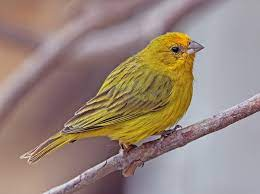

Sicalis flaveola
Wild Saffron Finches prefer to live in flocks while in spring they live in pairs for breeding. Unlike most finches, they are non migratory. They are omnivores and eat millets, wild seeds, canary grass seeds, oat groats and lots of green food.